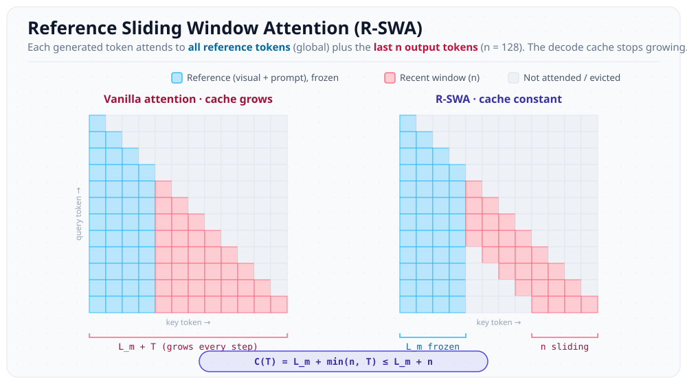

I spend most of my time trying to throw things away. My bachelor's thesis is on KV-cache optimization for long-context transformers, and day to day that means staring at a cache that grows by one entry per generated token and deciding which entries I can drop without the model noticing. StreamingLLM keeps a few sink tokens and a recent window. H2O keeps the "heavy hitters." SnapKV clusters what the prompt actually attended to and keeps that. Every one of these methods accepts the same premise: the cache grows, so be clever about what you evict.
Then I read Unlimited OCR Works, a technical report out of Baidu, and it quietly dissolved that premise for an entire class of tasks. Not by evicting better. By never letting the decode cache grow in the first place, and getting higher accuracy for it. That second part is the one I cannot stop thinking about, so this post is me working out why, and what it means for the kind of work I actually do.
The Premise I Optimize Under
Quick grounding, because the whole point lives here. When an LLM decodes autoregressively, it caches the key and value tensors of every token it has already seen so it does not recompute them. For a prompt (or, in OCR, an encoded image) of length L_m, after generating T tokens the cache holds L_m + T entries. It grows linearly, forever, and decoding is bandwidth-bound: every single step you reload the entire cache from HBM to attend over it.
I have written before about the two classic ways people fight this. Grouped Query Attention shrinks it at the architecture level by sharing KV heads. PagedAttention manages it at the systems level so you stop wasting memory to fragmentation. Cache eviction is the third axis, and it is the one I live in: keep the cache, but throw out the entries that are not pulling their weight. The entire game reduces to one question. Which entries are load-bearing?
What "Unlimited OCR" Actually Does
The setup is an OCR decoder that generates text conditioned on a big block of reference tokens: a compressed image (their DeepEncoder squeezes a 1024×1024 page down to about 256 visual tokens) plus the prompt. Call that reference block length L_m. They take DeepSeek-OCR as a baseline, a 3B-total, 0.5B-activated Mixture-of-Experts model, and replace every decoder attention layer with what they call Reference Sliding Window Attention (R-SWA).
R-SWA splits attention into two regions with different rules:
Reference tokens are global and frozen. Every generated token attends to all of them, always. They are encoded once and never enter any sliding state, so the visual features never get progressively blurred. This is the key difference from plain sliding-window attention, which would happily let the window chew through the image tokens too and degrade recognition.
Output tokens slide. For the text it is generating, a token only attends to the previous n tokens through a causal sliding window, where n defaults to 128. Anything older than that on the output side is simply gone.

The cache arithmetic falls right out of that picture. Standard attention pays L_m + T and climbs with every token. R-SWA pins the prefix and caps the output side at the window, so it is bounded by a constant no matter how long the document is:
# standard MHA decoder: cache grows with every generated token
C_MHA(T) = L_m + T
# R-SWA: prefix pinned, output side capped at the window n
C_R-SWA(T) = L_m + min(n, T) ≤ L_m + n # n = 128 by default
# implemented as a fixed-capacity queue over the decode region:
# - reference tokens (visual + prompt) are pinned, never evicted
# - each new output token evicts the oldest token still in the window
A constant decode cache means constant per-step latency and flat memory, which is how they parse dozens of pages in a single forward pass under a 32K budget instead of looping page-by-page and resetting memory each time. Their kernel study makes it concrete: the baseline's per-call attention latency climbs (with ugly spikes when the cache crosses alignment boundaries) while R-SWA's stays pinned flat across 6000+ decode steps.
The Part That Is Not a Memory Trick
If that were the whole story, R-SWA would be a clean efficiency win with the usual asterisk: you traded a little quality for a lot of memory. Here is the asterisk that is not there.
| OmniDocBench v1.5 | DeepSeek-OCR (full attn) | Unlimited-OCR (R-SWA) | Δ |
|---|---|---|---|
| Overall ↑ | 87.01 | 93.23 | +6.22 |
| Text edit distance ↓ | 0.073 | 0.038 | −0.035 |
| Formula CDM ↑ | 83.37 | 92.61 | +9.24 |
| Table TEDS ↑ | 84.97 | 90.93 | +5.96 |
The explanation they offer is the interesting bit. Full attention over a very long output gives the model more and more rope to drift, and they note it "could lead to divergence as the output length increases." The bounded window keeps every token anchored to the source instead of to its own lengthening history. So this is not quality-for-memory. The decode cache I would have been carefully protecting was, for this task, partly hurting the model.
Why This Breaks My Mental Model
The reason R-SWA works is a statement about the task, not about the architecture. For transcription — OCR, and the authors argue ASR and translation fall in the same bucket — a generated token barely needs the rest of the generated text. It needs the source in full, and a small window of what it just wrote to know where it is on the page. They frame it as human working memory: when you copy a book, your eyes stay on the source and a few characters of context, and you let the distant output fade. There is no reason to re-read everything you have already transcribed.
Which means the decode-side KV cache I would have been so careful to evict was, for this class of tasks, never load-bearing. My eviction policies spend all their cleverness deciding which past output tokens to keep. R-SWA's answer for reference-grounded parsing is: essentially none beyond the last 128, and a fixed window beats any learned or heuristic policy — because it also deletes that divergence failure mode I was not even pricing in.
Eviction Fights the Model. R-SWA Co-Designs With It.
Here is the lesson that actually changes how I think about my own work, and it is sharper than "attention can be cheaper."
Inference-time eviction is always fighting what the model learned. StreamingLLM, H2O, SnapKV all run on a model that was trained with full attention. That model learned to sometimes lean on far-away tokens, and eviction has to guess, at serving time, when that reliance is safe to break. You are patching a mismatch between how the model was trained and how you want to run it, and the patch is necessarily a heuristic that is sometimes wrong.
R-SWA does not patch. It trains with the bounded window across all layers — they continue-train the DeepSeek checkpoint for a few thousand steps with the new attention. The model never learns to depend on tokens that will not be there at inference. That is the entire reason it can be lossless: there is no mismatch left to fight. Eviction asks "what can I safely drop from a model that wanted to see everything?" R-SWA asks "what if it never wanted everything in the first place?"
That reframes the research question for me. The honest first question is not "what is my best eviction heuristic." It is "is my task reference-grounded, and if so, can I bake the bounded window into training and delete the eviction logic entirely?"
Where I Stay Honest About It
Now the part where I make myself slow down, because the clean version of this idea is also the wrong one. This is not "eviction is dead."
R-SWA works because the task is reference-grounded: there is a fixed, complete source the model can always see, and the output is a near-monotonic transcription of it. The economics depend on that too — keeping all the reference tokens global forever is only affordable because DeepEncoder compresses a page to ~256 tokens. Take away the cheap, complete, always-visible source and the trick loses its footing.
For open-ended generation the situation inverts. Multi-step reasoning, long chains of thought, agent trajectories, code with genuine long-range dependencies — there the model's own history is the context. There is no external source to anchor to; the generated text is the source. Bound the window there and you really do lose information the model needs. That is exactly the regime where eviction, paging, and quantization keep earning their keep, because the cache is load-bearing and the only question left is how to carry it cheaply.
So the takeaway is not "stop evicting." It is one question earlier than that: before you evict, ask whether your cache should be growing at all. If your task is reference-grounded, the best eviction policy is the one you get to delete, because you trained a constant cache instead of a clever way to prune a growing one.
What I Would Take to My Own Bench
Concretely, for the reference-grounded pipelines I touch, and in my sparse-attention experiments, the first move now is not a smarter scoring function for which KV entries to keep. It is an ablation: how far back into its own output does a token actually need to see before quality stops moving? If the answer is "a couple hundred tokens," that was never an eviction problem. It is a training-time window I should bake in.
And the implementation is almost insultingly simple: a fixed-capacity FIFO over the decode region with the prefix pinned. That simplicity is a feature. With my gpucheck habit, constant memory and constant per-step latency are exactly the kind of properties that are easy to assert in a test and hard to fake — far easier to trust than "our eviction heuristic usually keeps the right tokens."
I came into this report expecting an OCR trick. I left it slightly annoyed at myself, in the good way. For a whole family of tasks I had been answering "which entries do I evict" when the better question was "why is this cache growing at all." The best eviction, it turns out, is the one you engineered yourself out of needing — you just have to be honest enough about your task to know when you have actually earned it.